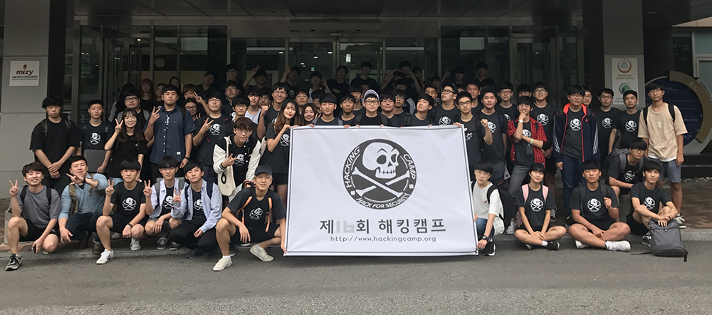
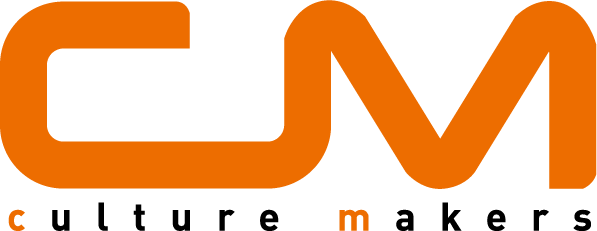

제 1회 해킹 캠프
일시: 2009년 8월 28일(금) ~ 29일(토)
장소: SecurityProof
해커가 되기 위해 필요한 지식 - vangelis
데프콘 본선 문제 풀이를 통한 해커들에게 필요한 지식알아보기 - 이용일
다양한 리눅스 백도어 생성과 탐지를 통한 해킹 이해 - 신정훈
웹 해킹과 실습 - 정구홍
시스템 해킹과 실습 - 여동기
CTF 실습 및 문제 풀이
제2회 해킹캠프
일시: 2010년 1월 9일(토) ~ 10일(일)
장소: 경기도 양평군 양평리조트
안내:
http://hackerschool.org/Sub_Html/HS_Community/includes/Camp/Camp.html
해커윤리 / 해킹 시 주의할 것 / 해커들의 직업 - vangelis
해킹 절차와 방법의 이해 - 정구홍
웹 해킹의 이해 - 김태형
해킹 이벤트(해킹 골든벨, 재미있게 공부하는 해킹, 해쿨 밴드 공연 등)
시스템 해킹을 위해 필요한 것들 - 1 (KAIST GoN 리더 & SOF 팀 멤버)
시스템 해킹을 위해 필요한 것들 - 2 (KAIST GoN 리더 & SOF 팀 멤버)
모의 해킹 시연 - 신정훈
해킹 공부 방법 (SOF팀)
질문과 답변 (참가자, 진행자 공동 참가)
CTF 실습 및 문제 풀이
제3회 해킹캠프
일시: 2010년 9월 11일(토) ~ 12일(일)
장소: 경기도 양평군 양평리조트
안내: http://hackerschool.org/Sub_Html/HS_Community/includes/Camp/Camp3.html
해커윤리 / 해킹 공부 시 주의할 것 / 해커들의 직업 - vangelis
난 정말 해킹이 뭔지 알고싶어! - 김승연
블러디 먼데이 FALCON의 해킹 기술 분석 - 정구홍
버퍼 오버플로우 - Redhat에서 Fedora까지 - mephist
스마트폰과 보안 - 지니
웹해킹, 요렇게 공부하세요 - lycan
해커들의 대화를 이해해보자! - Hacker's slang - 홍정우
제4회 해킹캠프
일시: 2011년 8월 27일(토) ~ 28일(일)
장소: 경기도 양평군 양평리조트
안내: http://hackerschool.org/Sub_Html/HS_Community/includes/Camp/Camp4.html
해커윤리 / 해킹 공부 시 주의할 것 / 해커들의 직업 - vangelis
해킹 공부방법 추천 - 정구홍
프로그래밍과 해킹 - 신정훈
하드웨어 해킹 - 하동주
해킹대회를 통해 배우는 해킹 - 홍정우
웹 어플리케이션 취약점 찾기 및 분석 - 김재용
스마트폰 게임 해킹 - 심준보
제5회 해킹캠프
일시: 2012년 2월 18일(토) ~ 19일(일)
장소: 경기도 양평군 양평리조트
안내: http://hackerschool.org/Sub_Html/HS_Community/includes/Camp/Camp5.html
해커윤리 / 해킹 공부 시 주의할 것 / 해커들의 직업 - vangelis
0과 1로 이루어진 컴퓨터의 세계 - 정구홍
Camp to the Wild - 홍정우
웹 해킹으로 할 수 있는 것들 - 장태윤
창의적으로 생각하기 - 박태준
USB를 통한 해킹 방법 - 진원
사회공학 & 심리학을 이용한 해킹 - 이석하
PDF reader 취약점 및 코드분석 방법 - 신정훈
네트워크 해킹 기초 - 이경문
A newbie bughunter's diary - 권혁
해커들이 영화나 드라마를 즐기는 법 - 김재용
현대 암호학 맛보기 - 강정진
제6회 해킹캠프
일시: 2012년 9월 1일(토) ~ 2일(일)
장소: 경기도 양평군 양평리조트
안내: http://hackerschool.org/Sub_Html/HS_Community/includes/Camp/Camp6.html
해커윤리 / 해킹 공부 시 주의할 것 / 해커들의 직업 - vangelis
Camp to the wild - 홍정우
웹 해킹 기초 - 조정현
A journey to the bug island - 권혁
Open and Pwn it - 정구홍
Malware Analysis - 신인호
how to make a vaccine - 이재일
핵캠 CTF 문제풀이 - 정구홍
드라마 "유령" 훑어보기 - 박상호
Metasploit 101 - 박병진
스마트폰 해킹 - 박천성
제7회 해킹캠프
일시: 2013년 2월 23일(토) ~ 24일(일)
장소: 경기도 양평군 셀라리조트
안내: http://hackerschool.org/Sub_Html/HS_Community/includes/Camp/Camp7.html
해커윤리 / 해킹 공부 시 주의할 것 / 해커들의 직업 - vangelis
버퍼오버플로우 기초 - 김성우
Power Of MITM(Man In The Middle) Attack - 이재일
해킹대회 문제 유형별 정리 - 권혁주
카카오톡 프로토콜 분석 - 박정환, 홍성빈
쉽게 혼동하는 암호학의 불편한 진실 - 강기훈
안드로이드앱 Debugging - 김재기
Binary Diffing - 김동완
Code Hook in Windows - 서인혁
리눅스 메모리 보호기법의 이해 - 김태욱
시스템 해킹의 예술 - 이석하
Goodbye SQL injection - 이주혁
제8회 해킹캠프
일시: 2013년 8월 17일(토) ~ 18일(일)
장소: 경기도 양평군 셀라리조트
안내: http://hackerschool.org/Sub_Html/HS_Community/includes/Camp/Camp8.html
해커윤리 / 해킹 공부 시 주의할 것 / 해커들의 직업 - vangelis
Ranker가 되어보자! - 플래쉬 게임 분석 - 권혁주
무선 네트워크 해킹과 보안 - 김태욱
DIY 쿼드콥터 제작기 - 이재일
Rookit 개념잡기 - 김성우
실전 웹 해킹! - 조정현
Bug Hunting For Fun & Benefit - 최민준
포렌식 입문 - 박상호
2013 Defcon 본선 참가 후기 - 박세한
3.20 악성코드 분석 - 김형준
군대에서의 정보보호 업무 - 장태윤
DNS 파밍(Pharming) 공격 이해하기 - 송준혁
제9회 해킹캠프
일시: 2014년 2월 15일(토) ~ 16일(일)
장소: 춘천 아름다운세상
해커윤리 / 해킹 공부 시 주의할 것 / 해커들의 직업 - vangelis
안드로이드 게임해킹 - 신정훈
웹해킹? 웹해킹! - 여동기
도전! 실전 해킹 실습 - 김재용
사이버테러, 그 숨겨진 이야기 - 박문범
군대에서 정호보호하기 - 장태윤
시스템 공격과 하드닝 - 임은지, 김준석
integer overflow 공격과 대응방안 - 강세윤
사이버 범죄 증거 찾기 - 원창연
취약점 보고에 관하여 - 송준혁
제10회 해킹캠프
일시: 2014년 8월 30일(토) ~ 31일(일)
장소: 서울유스호스텔
해커윤리 / 해킹 공부 시 주의할 것 / 해커들의 직업 - vangelis
Basic Web Hacking - 서민교
모의해킹 전용 리눅스 Kali Linux 소개 - 후크선장
IE Exploit in Exploit-DB - 김윤호
Password Cracking - 김낙현
실전 사이버 공격 분석 - Neotra
Let's Play with Network - 강진원
Advanced Web hacking - 정도원
기업 내부망 취약점 - 김현우
WIFI SD Card hacking - 권일택
제11회 해킹캠프
일시: 2015년 2월 14일(토) ~ 15일(일)
장소: 서울유스호스텔
해킹, 해킹 공부, 해커의 미래 - vangelis
웹툰 '씬커' 제작기 - 권혁주
Wireshark를 이용한 패킷 분석 - 김제곤
Return Oriented Programming 공격의 이해 - 김낙현
Password Cracking - 김낙현
사회공학 해킹 - 최성국
칼리 리눅스 & 프라이버시 보호를 위한 임베디드 리눅스 서버 운영 - 후크선장
디지털 포렌식 - 원창연
홈 네트워크 해킹 - 정구홍
카카오톡 암호화 프로토콜 분석 - 남대현
Buffer Overflow 공격의 이해 - 송치현
교도소 담장 위를 걷는 해커 - 최원영
제12회 해킹캠프
일시: 2015년 9월 19일(토) ~ 20일(일)
장소: 서울유스호스텔
해킹, 해킹 공부, 해커의 미래 - vangelis
Data Recovery 101 - 박상호
ARP Spoofing과 패킷 스니핑(+실습) - 정윤호
법이 바라보는 보안 vs 보안이 바라보는 법 - 이용재 변호사
1-Day 취약점으로 공부하는 Windows ROP - 김도현
게임햌 그것이 알고싶햌 - 김학수
CTF 비기너 가이드 - 임준오
RTL Chaining - 송상준
돈은 없지만 세콤을 달고 싶어 - 강진원
손버싱을 해보자 - Handray(+실습) - 박상희
'Shell' We Make Windows 'Shell' Code? - 문지현
Cyber Warfare -- 보이지 않는 전쟁 - 장형석
제13회 해킹캠프
해킹, 해킹 공부, 해커의 미래 - Vangelis
퍼징 삽질기 - 황호
해커들이 영화나 드라마를 즐기는 법 시즌2 - 김재용
있는거라도 잘 쓰자 - 최우석
실리콘밸리 탐방기, 파이썬으로 시작하는 인공지능 - 김민주
라틴아메리카 보안계 동향 - 원대로
QR Code 리버싱 - 김민정
암걸리는 ARM리버싱 - 이태양
pwntools를 이용한 exploit - 임재혁
CTF 풀이 세미나
침해 사고 케이스 분석, 랜섬웨어를 이용한 시나리오 제작/분석 - 박상협
Metasploit 101 - 권일택
제14회 해킹캠프
해킹, 해킹공부, 해커의 미래 - vangelis
Pintool을 이용하여 문제풀기 - 문승현
버퍼오버플로우 기본 테크닉 - 이동현
CTF 중심 시스템 공부 방법 - 장선웅
해킹 공부한다고 하면 듣는 이야기들 - 박상호
보안 실무를 하면서 배운 것들 - 임재혁
Keep Calm and Look Back - 문석주
OpenWRT 홈서버 구축하기 - 후크선장
Exploit Helpers - 박주현
PHP Wrapper을 통해 RCE로 연계해봐요! - 이예랑
PHP 트릭의 bypass 연계 - 박광호
모의해커의 해킹 이야기 - 조정현
CTF 풀이 세미나
제15회 해킹캠프
일시: 2017년 2월 18일(토) ~ 19(일)
장소: 서울유스호스텔
무엇을 공격할까? - vangelis
Easy Forensic - 신우성
Z3로 공부하는 SMT Solver 그리고 CTF - 정윤서
변종 랜섬웨어 너는 누구니? - 정상수
플랫폼을 넘나드는 바이너리 다루기 - 김동한
난독화된 스크립트 분석 - 주은지
SEH와 함께 떠나는 windows 대탐험 - 안소희
앗! 워게임, 해킹보다 쉽다! - 윤석찬
Hip알못과 함께하는 Heap Basic World - 최강현
Re:Zero부터 시작하는 Flash Player CVE 분석 - 김도현
웹개발 시큐어코딩 가이드 - 박광호, 이명용

제16회 해킹캠프
일시: 2017년 8월 26일(토) ~ 27일(일)
장소: 서울유스호스텔
해킹캠프101 - 정진욱
DEFCON 참가기 - 임재혁
피카피카! 스스로 조작하며 로직을 배워볼까? - 정상수
한글 악성코드 분석 101(부제: HAMA 101) - 김재기
리눅스 시스템 메모리 보호기법 - 이정모
보호된 안드로이드 분석하기 - 강민수
암호야 노올자! - 차현수
Chell Sode - 김성훈
쉽지만 어려운 웹 해킹을 알아봅시다. - 김용진
버그는 찾고 싶은데 놀고 싶고...이럴땐 퍼저를 만들자! - 임준오
Basic of Real World Exploit - 최강현
C++ 시큐어코딩 가이드 - 옥찬호

제17회 해킹캠프
일시: 2018년 2월 24일(토) ~ 25일(일)
장소: 서울유스호스텔
해킹캠프101 - 정진욱
핵알못 vs 핵잘알 - 심준보
LTE? is it secure? - 신정훈
초보탈출 시스템해킹 - 김도현
문제풀이로 배우는 XSS - 박광호
C++ 시큐어코딩 v2 - 옥찬호
Incident Response vs. Digital Forensics - 박문범
IDA로 리버싱 해보기 - 차현수
힙찔이?ㄴㄴ 힙합플레이야 - 황호
매쓰보이와 함께하는 취약점 분석 여행기 - 김낙현
Network Protocol Fuzzing - 이영주
제18회 해킹캠프
일시: 2018년 9월 1일(토) ~ 2일(일)
장소: 하이서울유스호스텔
어디로 가야하오 - 정진욱
나도 이제 악성코드를 분석해볼까? - 차민석
Deep dive analysis of hwp malware targeting cryptocurrency exchanges (Remaster Edition) - 조효제
Digital Forensics a2A - 김수영
BROP (부제: general ROP? nop, this is BROP! - 안건희
apt-get install heap - 황호
Security Option Bypass 101 - 문시우
버그헌팅 어렵지 않아 – 국내 미디어플레이어 취약점 제보기 - 최광준
1 Bug 3 Bounty - 김민정
창과 방패: Cheat & Anti Cheat - 김지오
제19회 해킹캠프
일시: 2019년 2월 16일(토) ~ 17일(일)
장소: 영등포 하이서울유스호스텔
해킹캠프101 - 정진욱
OS, Oh Yeees! - 라도훈
IoT 버그헌팅 - 백정운
IP 카메라 분석 삽질기 - 표상영
MS/RFID카드 해킹과 사회공학 - 노무승
웹해킹으로 먹고 살기 어렵지 않아요 - 김용진
평화로운 FAT 포렌식 분석 - 정재완
Memory protection and bypass techniques - 김민정&최동민
Hello mach-O - 정상수
tcache 동작 분석 및 이를 활용한 exploit - 정성조
제20회 해킹캠프
일시: 2019년 8월 24일(토) ~ 25일(일)
장소: 영등포 하이서울유스호스텔
KEYNOTE - POCSEC
OS, Oh Yeees! - 라도훈
해킹을 처음 시작하고부터 지금까지의 회고록 - 김도현
웹 해킹의 시작과 끝 - 김범진
Difference between kernel UAF and Userspace UAF - 최종윤&강민석
SCADA 취약점 사례 및 분석 방법 - 안병찬
블록체인 보안 취약점 분석 - 한우영
OS로 시작하는 해킹 공부 - 김성우
키보드...너의 마음을 후킹하겠어 - 민진규
조금은 꼰대스러운 이야기 - 박문범
아바타 문제풀이 이벤트
제21회 해킹캠프
일시: 2020년 8월 15일(토) ~ 16일(일)
장소: 온라인
pwnable for beginner - 정경호
IoT 기기(사무용 복합기) 취약점 분석 - 김준태
하드웨어 글리칭 공격 기법 소개 - 김지섭
펜테스팅을 위한 탐지 우회 기법- 이석영
내가 해커가 되기까지 - 김용진
2020 Defenit CTF - Input Test Driver Write Up & Linux Kernel Exploit 기초 - 김현우
자동차 해킹을 위한 넓고 얕은 지식 - 이유진
버그헌터들과의 인터뷰 - 김도현
Chrome을 해킹하는 5가지 방법 - 김윤호
모의해킹 단골 손님, 그를 알아보자.- 정상수
후원

컬처메이커스는 ICT 융합보안분야 트렌드 분석을 바탕으로 조직의 역량강화를 위한 컨텐츠 개발, 교육 및 행사 기획∙운영에 특화된 전문기업입니다.
제22회 해킹캠프
일시: 2021년 2월 20일(토) ~ 21일(일)
장소: 온라인
악성코드로 알아보는 사이버 크라임갱(부제: 코인 떡상과 발표자의 피땀눈물) - 안소희
버그바운티 어서오고- 유동현
퍼징의 이해(이론 및 실습) - 장대희
Fun, Cool, Sexy하게 해킹하기(네트워크,웹 프로토콜 분석 방법) - 장한빈
웹 취약점 스캐너(이론 및 실습) - 김주원
CodeQL Analysis(이론 및 실습) - 홍승표
무엇이든 물어보세요 QnA - Demon
후원
컬처메이커스는 ICT 융합보안분야 트렌드 분석을 바탕으로 조직의 역량강화를 위한 컨텐츠 개발, 교육 및 행사 기획∙운영에 특화된 전문기업입니다.
제23회 해킹캠프
일시: 2021년 8월 14일(토) ~ 15일(일)
장소: 온라인
How red-team attacks System - 정상수
webhacking.kr 웹에킹의 접근법- 장종민, 김민욱
Bluetooth 발치- 이재승
비트코인과 함께 보는 블록체인 - 박현청
Electron Security - 이효민
DevSecOps 시작하기 - 최지헌
버그바운티를 해보자 - 김용진
라우터 인증 우회 취약점 - 김제하
Unity 게임, 어디까지 털어봤니? - 손지훈
카카오톡 후킹 - 장재훈
무엇이든 물어보세요 QnA - Demon
후원
(주) 엔키는 해커의 관점으로 보안 문제를 해결하기
위해 악성코드 분석 및 위협정보 제공, 보안 컨설팅, 트레이닝, 보안기술 연구개발 서비스를 제공하는 사이버 보안 전문기업입니다.
버그캠프는 해커들과 함께 숨겨진 보안 문제를 찾아내고 해결하는 (주) 엔키가 운영하는 버그바운티 플랫폼입니다. 많은 보안 인재들의 참여바랍니다.
제24회 해킹캠프
일시: 2022년 2월 19일(토) ~ 20일(일)
장소: 온라인
웹해킹, 원리부터 제대로 아셔야 합니다 - 김민석
웹 해커의 워게임과 CTF, 그리고 버그바운티 - 김승현
Javascript Engine Exploitation 101 - 허승환
웹 취약점 수동 분석 보조 점검 도구(BWASP) - 김주원, 이주명
취약점 분석 자동화 - 김성우
와이파이(IEEE 802.11) 해킹에 대해 알아보자!(Part-1,2) - 노무승
보안 메신저 안티-포렌식 기법 우회하기 - 손지훈
내 마음대로 정리해 본 시스템 해킹 방법론 - 김도현
권한 상승 취약점에 대해 알아보자 - 김세희
무엇이든 물어보세요 QnA - Demon
제25회 해킹캠프
일시: 2022년 8월 27일(토) ~ 28일(일)
장소: 국제청소년센터 유스호스텔
공부의 神 - 화이트 해커
위협 케이스스터디- 김성우
보안 연구와 대학원에 대해 참고할 만한 것들- 이다음
Pwn2Own Austin 참가 후기 및 라이트업 - 김제곤
악성코드와 APT 그룹 - 천호진
반갑다, 논리야(Hello, Logic bug) - 최동민 & 남훈
따끈따끈한 BoB 생존기(feat. Growth Mindset) - 배유진
리얼월드 취약점 탐색 방안 - 문상헌
0.1%의 승부, 선거 개표방송 파헤치기 - 이태희
회상록(Feat. JSec)(Prod. hayyim) - jir4vvit - 손현지&윤준원
CTF 풀이 - Demon
제26회 해킹캠프
일시: 2023년 2월 11일(토) ~ 12일(일)
장소: 영등포 하이서울유스호스텔
일반고에서 해킹대회에 나가기까지 - 최장우
시스템 해킹에서 나오는 Exploit Mitigation과 우회 기법(ARM32 exploit) - 서호진
버그를 찾을때의 마음가짐 - 김용진
블록체인 101 - 이재일
블록체인 해킹 가즈아 - 정구홍
최신 glibc 속 hook 없이 살아남기 with IO_FILE
Fuzzing Case Study - JJY
웹 버그바운티 감옥 일지 - 김민욱
Django 1-day 분석 - 윤석찬
CTI 찍먹해보기 - 최광준
Lazarus 공격 그룹은 어떤 방식으로 공격을 수행할까? - 정현우
CTF 질문 답변 - Demon
후원
(주) 엔키는 해커의 관점으로 보안 문제를 해결하기
위해 악성코드 분석 및 위협정보 제공, 보안 컨설팅, 트레이닝, 보안기술 연구개발 서비>스를 제공하는 사이버 보안 전문기업입니다.
버그캠프는 해커들과 함께 숨겨진 보안 문제를 찾아내고 해>결하는 (주) 엔키가 운영하는 버그바운티 플랫폼입니다. 많은 보안 인재들의 참여바랍니다
.
최고의 오펜시브 시큐리티 연구인력으로 구성된 78ResearchLab은 기업, 국가 주요 기관 및 연구소에 보안 취약점 분석 서비스를 제공하고 모의해>킹, 교육 등 종합적인 IT보안 서비스를 제공하고 있습니다.
제27회 해킹캠프
일시: 2023년 8월 26일(토) ~ 27일(일)
장소: 영등포 하이서울유스호스텔
취약점이 중요하지 않다. 회사에서 보안쟁이로 살아남기! - 이창선
Can U Steal My Keyboard?(DLL Injection) - 이동준
브라우저에서 버그 찾기 모험 - 황수민, 이도현
Windows의 가상화 기반 보안(VBS)과SecureKernel Attack Surface - 최호수
CTF Player to Hacker: 선택과 집중 - 이세형
What is Penetration Testing? - 유병일
Pwning Electron Application - 안인서, 민제민
악성코드 개발 도전기, 부제: 근데 개발해서 뭐하지? - 김희찬, 조영국
친한 사람들끼리 데프콘 본선가기(feat. HypeBoy) - 차현수, 채하늘
인공지능으로 도전하는 해킹 - 배송현
CTF 질문 답변 - Demon
후원
(주) 엔키는 해커의 관점으로 보안 문제를 해결하기
위해 악성코드 분석 및 위협정보 제공, 보안 컨설팅, 트레이닝, 보안기술 연구개발 서비>스를 제공하는 사이버 보안 전문기업입니다.
버그캠프는 해커들과 함께 숨겨진 보안 문제를 찾아내고 해>결하는 (주) 엔키가 운영하는 버그바운티 플랫폼입니다. 많은 보안 인재들의 참여바랍니다
.
PKSecurity는 어렵고 복잡한 보안 문제를 찾아내는 오펜시브
시큐리티 전문 기업 입니다.
최고의 오펜시브 시큐리티 연구인력으로 구성된 78ResearchLab은 기업, 국가 주요 기관 및 연구소에 보안 취약점 분석 서비스를 제공하고 모의해>킹, 교육 등 종합적인 IT보안 서비스를 제공하고 있습니다.
컬처메이커스는 ICT 융합보안분야 트렌드 분석을 바탕으로 조직의 역
량강화를 위한 컨텐츠 개발, 교육 및 행사 기획∙운영에 특화된 전문기업입니다.

재단법인 미래기술연구소는 정보통신기술의 발전과 인력양성을 지원하여 사이버공간에서 국가역량강화와 미래산업을 육성하는 연구소입니다.
제28회 해킹캠프
일시: 2024년 2월 17일(토) ~ 18일(일)
장소: 영등포 하이서울유스호스텔
김휘림, “당신도 툴키디가 될 수 있다”
사이버작전사령부, “MS 오피스 문서 패스워드 크랙”
이주선, “A year of an iOS Hacker”
백부승, 윤다현, “웹 사이트에서 버그 찾는법(feat. BoB)”
이준오, “Windows Kernel In-The-Wild”
안수현, 채서연, “개발자들이 자주 하는 보안 실수”
경찰청 국가수사본부, “카빙파일 복구 기법에 대한 이해”
이성권, “브라우저 탐험기”
김민서, 강찬송, “윈도우 소프트웨어 버그헌팅”
김민정, "In the wild, it’s so wild"
CTF 질문 답변 - Demon
후원
(주) 엔키는 해커의 관점으로 보안 문제를 해결하기 위해 악성코드 분석 및 위협정보 제공, 보안 컨설팅, 트레이닝, 보안기술 연구개발 서비스를 제공하는 사이버 보안 전문기업입니다.
버그캠프는 해커들과 함께 숨겨진 보안 문제를 찾아내고 해결하는 (주) 엔키가 운영하는 버그바운티 플랫폼입니다. 많은 보안 인재들의 참여바랍니다.

하임시큐리티는 오펜시브 최중요 연구 과제 수행 및 해킹 트렌드를 선도하는 기업입니다. 학생들이 실제 보안 연구 경험을 쌓을 수 있도록 장학금 및 연구 지원 제도를 운영하고 있습니다.
PKSecurity는 어렵고 복잡한 보안 문제를 찾아내는 오펜시브 시큐리티 전문 기업 입니다.
We make the world more secure by conquering the most difficult cybersecurity challenges.
최고의 오펜시브 시큐리티 연구인력으로 구성된 78ResearchLab은 기업, 국가 주요 기관 및 연구소에 보안 취약점 분석 서비스를 제공하고 모의해킹, 교육 등 종합적인 IT보안 서비스를 제공하고 있습니다.
재단법인 미래기술연구소는 정보통신기술의 발전과 인력양성을 지원하여 사이버공간에서 국가역량강화와 미래산업을 육성하는 연구소입니다.
제 29회 하계 해킹캠프
2024년 8월 17일(토) ~ 18일(일)
영등포 하이서울유스호스텔
발표
후원